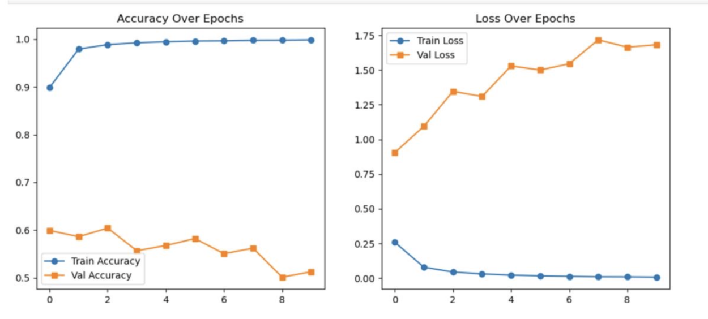
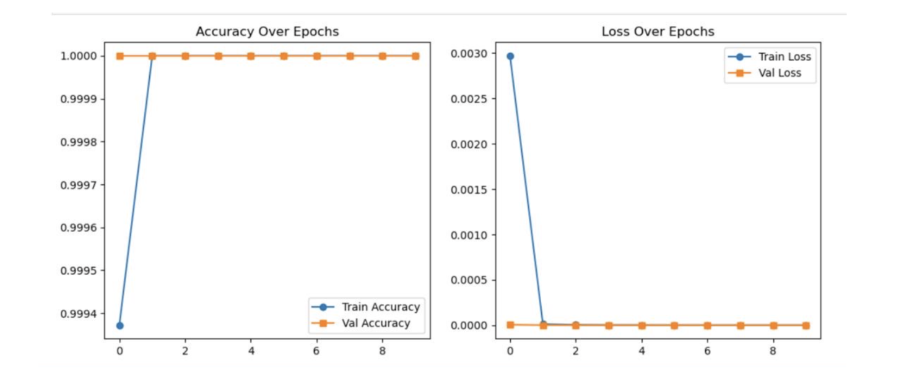

Driver Drowsiness Detection
By Yelnur Abdushev, Emma Gandonou, Keto

Introduction
Our project tackles an essential issue in today’s society, and that is drowsy driving. According to the World Health Organization, sleepiness while driving contributes to 3% to >30% of all road traffic accidents globally [1]. In addition, more than 20% of drivers feel a need to stop driving at least once due to sleepiness.
a recent study has shown that driving with sleep deprivation is similar to driving while intoxicated, with subjects who were kept awake for 17–19 hours showing psychomotor impairment equivalent to blood alcohol concentration levels of 0.05% [2]. This is dangerous not only for drowsy drivers but also their passengers and everyone else on the road.
To address this problem, our project will focus on training a neural network capable of detecting drowsiness in drivers and alerting them in time before any accidents happen. However, unlike existing systems, ours will also focus on individuals with glasses, so that the drowsiness detection system can provide the correct results for those individuals.
We are comparing datasets and it’s gonna be in an app.
Ethical Considerations
There were numerous ethical considerations we took into account when developing our model. First of all, we ensured that our model was trained on a diverse set of data consisting of different demographic groups: people of all races, gender, and age.
Secondly, we made sure that when collecting biometric data, our app did not store any personal data in the Cloud or servers, and instead stored it as a secure enclave on the individuals’ personal devices.
Thirdly, we understand the importance of users’ privacy, which is why the collected data would not be shared with anyone.
Although we tried our best to make our model as ethical as possible and to follow the three guidelines stated above, we believe our model has shortcomings since it is very young and needs extensive time and resources to be developed in a way that is completely ethical, for example, using an even more diverse and extensive dataset.
Related Works
Existing drowsiness detection systems have been created using CNN or ANN. A recent paper published in the Journal of Engineering and Applied Sciences shows that real-time drowsiness detection can be done using CNNs and Transfer Learning, achieving 90–99.86% accuracy across multiple datasets [3]. It integrates pre-trained models like MobileNetV2 and InceptionV3, Haar Cascade for feature extraction, and a mobile application for real-world use in driver safety. The study highlights the importance of dataset diversity, bias mitigation, and real-time performance to ensure reliable drowsiness detection.
Another system was developed using an Artificial Neural Network (ANN) based on visual facial descriptors like eye aspect ratio (EAR), mouth aspect ratio (MAR), face length (FL), and face width balance (FWB) [4]. The system integrates EEG-based microsleep detection with facial feature analysis, achieving 72.25% sensitivity and 60.40% accuracy when using Discrete Fourier Transform (DFT) with ANN. The research highlights limitations in practicality, requiring preset camera positions and restrictions on wearing sunglasses, while emphasizing the potential for real-world driver alert systems.
A review article provides a comprehensive overview of recent advancements in driver drowsiness detection, categorizing approaches into physiological, behavioral, and vehicle-based methods [5]. Physiological methods leverage EEG, ECG, and other biometric signals, while behavioral methods focus on facial expressions, eye closure, and head movements. Vehicle-based methods analyze driving patterns, including lane deviation and steering angle changes. The review discusses challenges such as real-time implementation, sensor reliability, and environmental conditions affecting detection accuracy. It also highlights the integration of machine learning techniques to enhance detection precision and adaptability across different driving conditions.
Some current products employing drowsiness detection include Motive’s Drowsiness AI and Bosch’s Driver Drowsiness Detection. Motive’s product is a camera with AI that alerts drivers when they are yawning or have closed their eyes [5]. The camera beeps and tells drivers to pull over and take a break. Bosch Mobility uses a steering angle sensor to determine the steering angle and steering angle velocity. Measuring these factors allows the system to monitor the steering movements and advise drivers to take a break in time [6].
A real-time system published in the Journal of Physics: Conference Series was developed using webcam-based facial expression analysis to detect driver drowsiness [7]. The driver’s facial expressions are captured and recorded using a webcam. The system calculates the eye aspect ratio, mouth opening ratio, and nose length ratio. These values are compared to threshold levels, and the system flags drowsiness based on the deviations.
Thesis
The driver drowsiness detection system will help save thousands of lives if not millions. We as a society can use AI for the benefit of our good and make our roads safer. .
<Method
We built a driver drowsiness detection system using the Convolutional Neural Network (CNN) model, with MobileNetV2 as a base model. We also used TensorFlow and OpenCV to detect signs of driver drowsiness from real-time webcam pictures. Our model was trained on three datasets: OC oC Drowsiness - Detection, MRL Eye Data Set, and Driver Drowsiness Dataset, which together provided diverse facial and eye images. We trained our model on each of the datasets separately to compare the datasets and see which one provided us with the best results.
We used OpenCV for facial extraction (e.g, eye aspect ratio), and the Twilio app to send alerts when drowsiness was detected. Python, Jupyter Hub, and Tensorflow were the main tools of development. Some of the pitfalls we encountered were drastic overfitting and lengthy run times, which we attempted to address through using GPU other than CPU, and using regularization and dropout layers.
<Discussion/Results
After comparing the three datasets, we found that (there was no significant difference in results between datasets) or (one of the datasets: _______ produced the best results). We chose this dataset to pair with our model in wrapping into an application so users can upload pictures and the model will determine if the user if drowsy or alert.
The best accuracy that we were able to produce was ________ by using ____ epochs and adjusting the ______ hyperparameters. Figure 1 shows our starting validation and training accuracy and loss over epochs, with drastic overfitting. Figure 2 shows the validation training accuracy and loss after making adjustments to the model, where improved accuracy and less overfitting is demonstrated.
Figure 1
Figure 2
Conclusion
Although our drowsiness detection system is not perfect, we believe that with extensive time and resources it could be developed into a stronger and more reliable model. Driver drowsiness detection systems have high potential, as they could be implemented in any vehicle type: not just cars. When the system is perfected to the point where it's reliable, it could save thousands if not millions of lives on the road. For our future work, we want to be able to implement such technology as widely as possible, by making it accessible without compromising safety.
Firstly, we could make our model be able to take live video footage as input instead of pictures. We could also incorporate an even vaster dataset, using data augmentation to increase the quality of the dataset as well. We would also wrap our model with a hands-free, sophisticated app that can produce audio telling the driver to stop, alert family and friends, and make loud sounds to wake the driver. Additionally, we could develop a model that is able to detect drowsiness through phones with low camera quality, as well in areas with weak cellular networks. We would also work with car companies to build the technology into the cars, instead of just an app. The possibilities are limitless, and we look forward to exploring the potential of our driver drowsiness detection system further.
“What all of us have to do is to make sure we are using AI in a way that is for the benefit of humanity, not to the detriment of humanity.” – Tim Cook
Reflection
If we were to do this project again, we would start earlier so that we would have more time to implement the wrapping of an app in a more usable manner. We also might have tried to combine the three datasets into one dataset for a very extensive dataset, instead of comparing the three. However, this could have extended the training time exponentially. Additionally, we might have asked for guidance and help on certain aspects of the project instead of spending a lot of time struggling with code and errors.
To Do
- Finish training the model on the other 2 datasets
- Keep reducing overfitting
- Wrap with gradio
References
[1] Albadawi, Y., Takruri, M., & Awad, M. (2022). A Review of Recent Developments in Driver Drowsiness Detection Systems. Sensors, 22(5), 2069. https://doi.org/10.3390/s22052069
[2] Dawson, D., & Reid, K. (1997). Fatigue, alcohol and performance impairment. Nature, 388(6639), 235. https://doi.org/10.1038/40775
[3]Salem, D., & Waleed, M. (2024). Drowsiness detection in real-time via convolutional neural networks and transfer learning. Journal of Engineering and Applied Science, 71, 122. https://doi.org/10.1186/s44147-024-00457-z Bayne, A., Trivedi, N., Liotta, M., Siegfried, A., Gaspar, J. G., & Carney, C. (2022). Countermeasures to Reduce Drowsy Driving: Results of a Literature Review and Discussions with Experts (Technical Report). AAA Foundation for Traffic Safety.
[4]Inkeaw, P., Srikummoon, P., Chaijaruwanich, J., Traisathit, P., Awiphan, S., Inchai, J., Worasuthaneewan, R., & Theerakittikul, T. (2022). Automatic Driver Drowsiness Detection Using Artificial Neural Network Based on Visual Facial Descriptors: Pilot Study. Nature and Science of Sleep, 14, 1641–1649. https://doi.org/10.2147/NSS.S376755
[5]Bayne, A., Trivedi, N., Liotta, M., Siegfried, A., Gaspar, J. G., & Carney, C. (2022). Countermeasures to Reduce Drowsy Driving: Results of a Literature Review and Discussions with Experts (Technical Report). AAA Foundation for Traffic Safety.
[6]Bosch Mobility. (n.d.). Driver Drowsiness Detection. https://www.bosch-mobility.com/en/solutions/assistance-systems/driver-drowsiness-detection/
[7] Chinthalachervu, R., et al. (2022). Driver Drowsiness Detection and Monitoring System using Machine Learning. Journal of Physics: Conference Series, 2325, 012057. https://doi.org/10.1088/1742-6596/2325/1/012057
[8] Lee, L. (2024, August 16). Drowsiness AI battles the dangers of driver fatigue. Motive. https://gomotive.com/blog/drowsy-driver-detection/
[9]Nasri, I. (2022, May 20). Driver Drowsiness Dataset (DDD). Kaggle. https://www.kaggle.com/datasets/ismailnasri20/driver-drowsiness-dataset-ddd